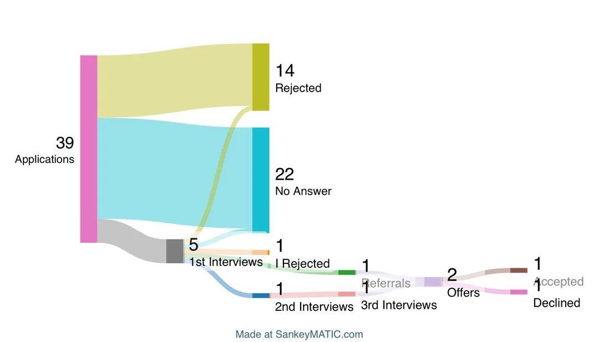

Quiet study spaces are designed for students who need an environment with minimal conversation and distraction.
Look for spaces with comfortable seating, reliable Wi-Fi, and access to power outlets.
| Location | Noise Level | Group Work | Power Outlets |
|---|---|---|---|
| Library | Low | Limited | Yes |
| Student Center | Medium | Yes | Yes |
| Cafe | High | Yes | Limited |